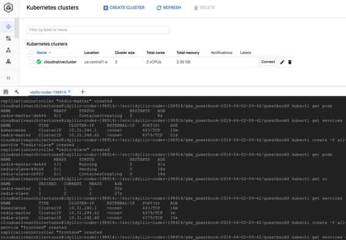

Kubernetes Engine
In the last few years, the developer community has embraced the use of containers (like Docker) to deploy applications in the form of images that are lightweight, stand alone, and include everything needed to run it: code, runtime, system tools, system libraries, and settings. Now, to effectively run containers at scale, you need an orchestration engine which can help in operational aspects like the autoscaling of the cluster in lines with load, auto-healing of impaired nodes, setting, and managing resources limits (such as, CPU and RAM), providing integrated monitoring and logging capabilities—which is where Kubernetes (popularly known as K8s) comes into the picture. Google is the original creator of Kubernetes and has also been using it internally for container-based production deployments for multiple years before making it open source and making it part of the Cloud Native Computing Foundation.
If you love reading comics, then this Kubernetes Engine comic is not to be missed: https://cloud.google.com/kubernetes-engine/kubernetes-comic/.
Kubernetes draws on the same design principles that run popular Google services and provides the same benefits—automatic management, monitoring and liveness probes for application containers, automatic scaling, rolling updates, and more.
You can quickly get started using the Google Cloud console or APIs/CLIs and deploy your first cluster, like we did in the following screenshot. You can also use the Google Cloud Shell to deploy a sample application to test out the cluster features:

Apart from the Kubernetes Engine, Google also offers a Container Builder (https://cloud.google.com/container-builder/) service, using which you can bundle up your applications and other artefacts into Docker containers for deployment. As the service also supports automated triggers from source code repositories (such as GitHub, Bitbucket, and Google Cloud Source repositories), you can create fully automated CI/CD pipelines which can be initiated as soon as there's a new code check in. Another service which is related to this container ecosystem is the Container Registry (https://cloud.google.com/container-registry/) so that you can store your private container images and allow push, pull, and management of images from any system, VM instance, or your own hardware.